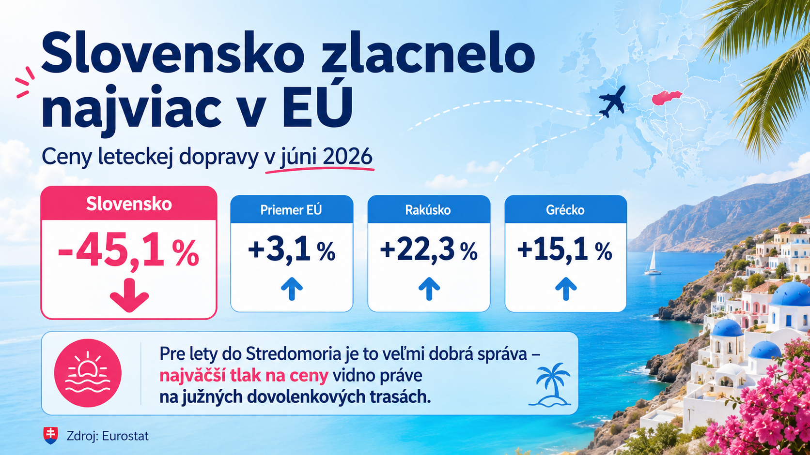
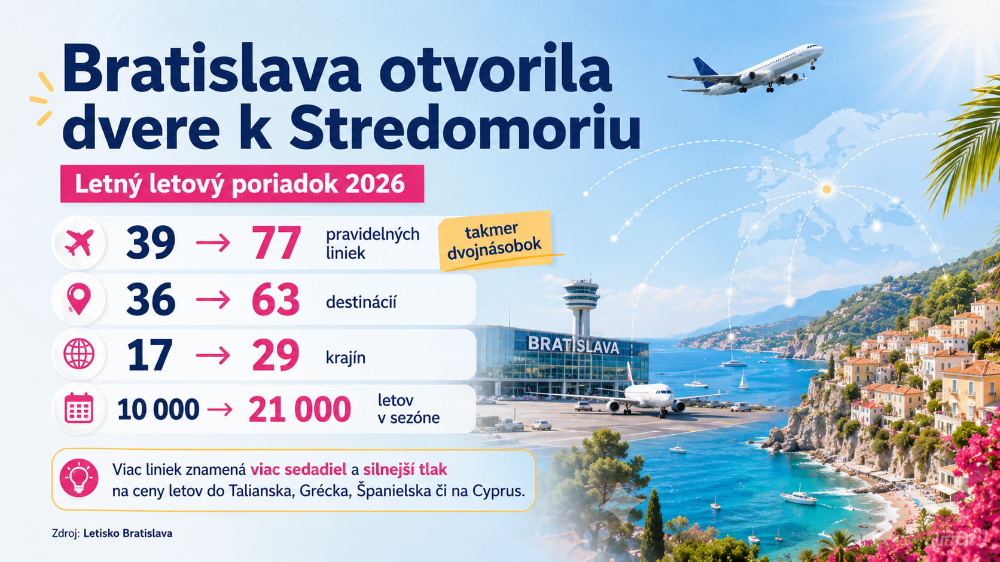
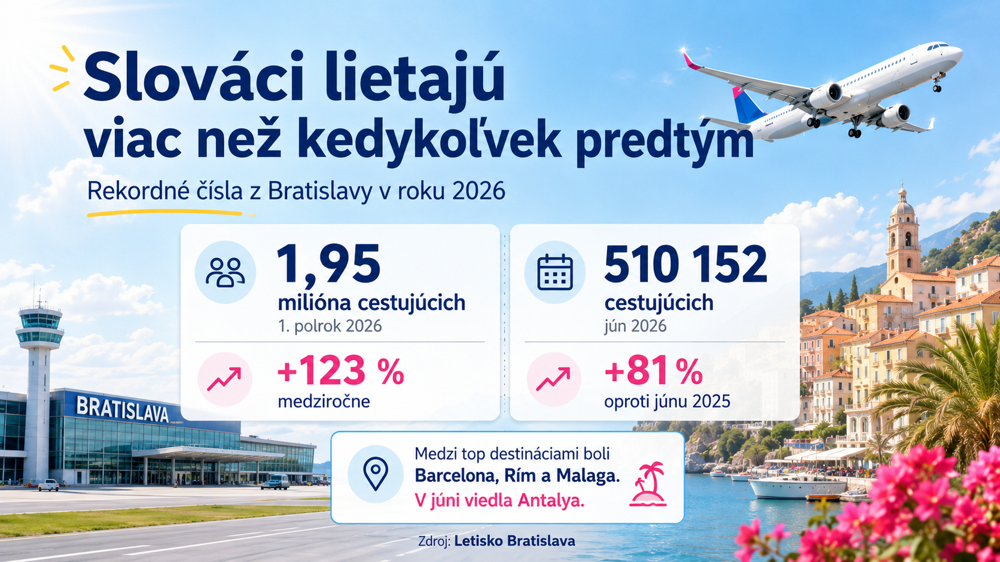

Kým v Európskej únii ceny leteckej dopravy rástli, na Slovensku padli takmer o polovicu. Nové údaje Eurostatu vyzerajú ako splnený sen každého cestovateľa. Znamená to však, že aj letenky do Grécka, Talianska, Španielska či na Cyprus sú naozaj o 45 % lacnejšie?
Odpoveď nie je úplne jednoduchá. Presné číslo pre Stredomorie neexistuje, no pri pohľade na nové linky z Bratislavy je zrejmé, že najtvrdší konkurenčný boj sa odohráva práve na dovolenkových trasách smerom na juh.
Slovensko ide proti celej Európe
Podľa Eurostatu boli ceny leteckej osobnej dopravy na Slovensku v júni 2026 medziročne nižšie o 45,1 %. Nebol to pritom jednorazový výkyv:
- apríl 2026: −53 %
- máj 2026: −48,2 %
- jún 2026: −45,1 %
Slovensko tak zaznamenalo najvýraznejší pokles v celej Európskej únii. V rovnakom čase ceny leteckej dopravy v priemere EÚ vzrástli o 3,1 %, v Rakúsku o 22,3 % a v Grécku dokonca o 15,1 %. Rozdiel medzi Slovenskom a Rakúskom tak dosiahol viac ako 67 percentuálnych bodov.

Treba však zdôrazniť jednu dôležitú vec: 45,1 % nie je priemerná zľava na každú letenku. Ide o medziročnú zmenu cenového indexu leteckej dopravy. Eurostat nerozdeľuje tento slovenský údaj podľa jednotlivých krajín, letísk ani dovolenkových oblastí.
Z oficiálnych dát preto nevieme povedať, či napríklad letenky zo Slovenska na Sicíliu zlacneli o 30, 45 alebo 60 percent.
Stredomorie je v centre cenového súboja
Hoci samostatné percento pre Stredomorie nemáme, ponuka letov ukazuje veľmi jasný trend.
Bratislavské letisko malo počas leta 2025 v ponuke 39 pravidelných liniek do 36 destinácií. V lete 2026 je to už:
- 77 pravidelných liniek, nárast približne o 97 %,
- 63 destinácií, nárast o 75 %,
- 29 krajín namiesto pôvodných 17,
- približne 21 000 letov počas letnej sezóny, oproti približne 10 000 letom pred rokom.

Ešte zaujímavejšie je, kam nové kapacity smerujú.
Do 14 rovnakých letísk lietajú z Bratislavy dvaja rôzni dopravcovia. Až 12 z týchto 14 konkurenčných destinácií, teda takmer 86 %, patrí do stredomorského dovolenkového pásma:
Antalya, Larnaka, Korfu, Palma de Mallorca, Alicante, Tirana, Atény, Barcelona, Neapol, Palermo, Lamezia Terme a Malaga.
Na viacerých z nich proti sebe priamo stoja Ryanair a Wizz Air. Na Korfu a Malorke súperia Ryanair so Smartwings, pri Larnake Wizz Air so Smartwings a pri Antalyi Pegasus so SunExpress.
Práve toto je pravdepodobne jeden z hlavných dôvodov výrazného poklesu cien. Keď na rovnakej trase lietajú dve spoločnosti, rastie počet sedadiel a dopravcovia musia oveľa pozornejšie reagovať na ceny konkurencie.
Ide však o analýzu Letom po Stredomorí, nie o samostatný záver Eurostatu. Eurostat ako možné príčiny cenových výkyvov uvádza tiež sezónnosť, meniaci sa dopyt a geopolitické udalosti.
Sú lety do Stredomoria lacnejšie o viac než 45 %?
Potvrdený fakt
Oficiálne štatistiky neumožňujú vypočítať samostatné medziročné percento iba pre lety zo Slovenska do Stredomoria.
Najpravdepodobnejší záver
Na trasách, kde pribudol druhý dopravca a výrazne sa zvýšil počet letov, mohol byť pokles cien rovnaký alebo ešte výraznejší než celoslovenských 45 %. Týkať sa to môže najmä miest ako Barcelona, Malaga, Alicante, Neapol, Palermo či Atény.
Neplatí to však automaticky pre všetky dovolenkové lety.
Na ostrovy počas školských prázdnin, pri cestovaní cez víkend alebo na trasách obsluhovaných iba jednou spoločnosťou môže byť pokles podstatne menší. Niektoré konkrétne lety dokonca môžu byť drahšie než pred rokom, hoci celkový cenový index výrazne klesol.
Číslo −45,1 % teda najlepšie vystihuje celý slovenský letecký trh, nie cenu každej letnej dovolenky.
Slováci nové spojenia skutočne využívajú
Pokles cien nesprevádza iba väčšia ponuka. Prudko rastie aj počet cestujúcich.
Bratislavské letisko vybavilo počas prvého polroka 2026 približne 1,95 milióna cestujúcich, čo bolo medziročne o 123 % viac. Len v júni prešlo letiskom rekordných 510 152 cestujúcich, o 81 % viac než v júni 2025.

Medzi najvyužívanejšie pravidelné destinácie prvého polroka patrili Barcelona, Rím a Malaga. V júni sa najvyťaženejšou destináciou stala Antalya, kam smerujú pravidelné aj charterové lety.
To naznačuje, že rast slovenského letectva nie je postavený iba na Londýne či pracovných cestách. Veľkú časť rekordného záujmu tvoria práve cesty za Stredozemným morom.
A čo Košice?
Z Košíc je situácia o niečo odlišná. Počas leta 2026 je naplánovaných viac než 800 charterových letov do 16 destinácií v deviatich krajinách. Pribudla Olbia na Sardínii a pravidelné spojenia dopĺňajú Malaga, Rím a sezónny Zadar.
Na rozdiel od Bratislavy však na hlavných pravidelných stredomorských trasách z Košíc zatiaľ spravidla lieta iba jeden dopravca. Konkurenčný tlak na cenu je preto slabší a nedá sa očakávať, že výsledok bude na každej trase rovnaký ako v Bratislave.
Najdôležitejší záver pre cestovateľa
Slovensko dnes nezažíva iba krátkodobú akciu na niekoľko lacných leteniek. Mení sa celý trh:
viac liniek → viac sedadiel → viac konkurencie → väčší tlak na ceny.
Presné percento pre Stredomorie nepoznáme. Dostupné údaje však naznačujú, že práve lety do Talianska, Španielska, Grécka, na Cyprus a do Turecka patria medzi najväčších víťazov novej konkurencie.
A možno najvýstižnejšie platí toto:
Nielen Slováci objavili lacné lietanie. Letecké spoločnosti konečne objavili Slovensko.
Zdroje
- Eurostat – harmonizovaný index cien leteckej osobnej dopravy, jún 2026
- Štatistický úrad SR – vývoj spotrebiteľských cien v júni 2026
- Letisko Bratislava – letný letový poriadok 2026 a prevádzkové výsledky
- Letisko Košice – letná charterová sezóna 2026